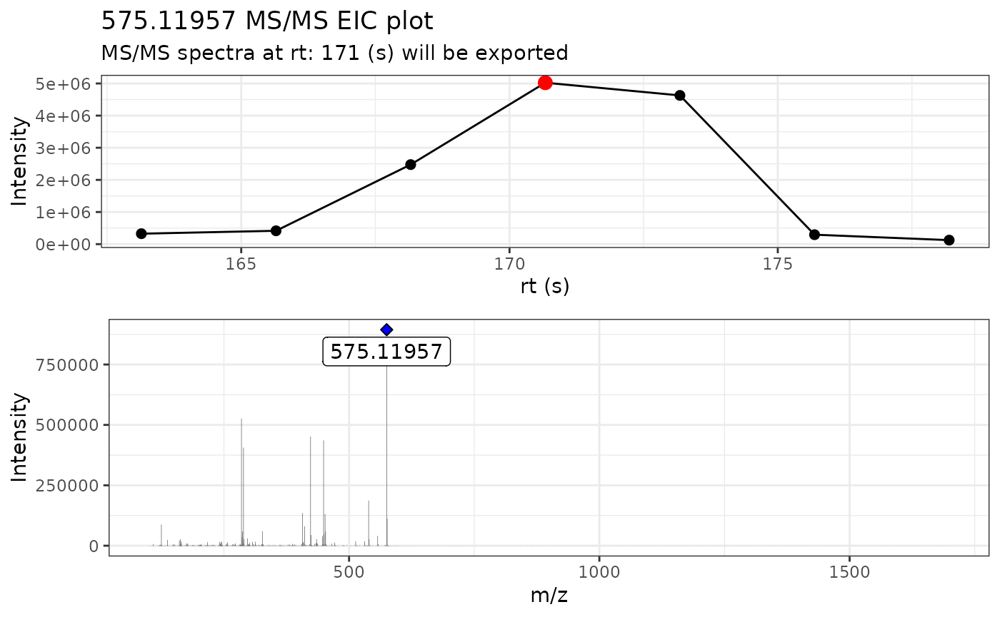
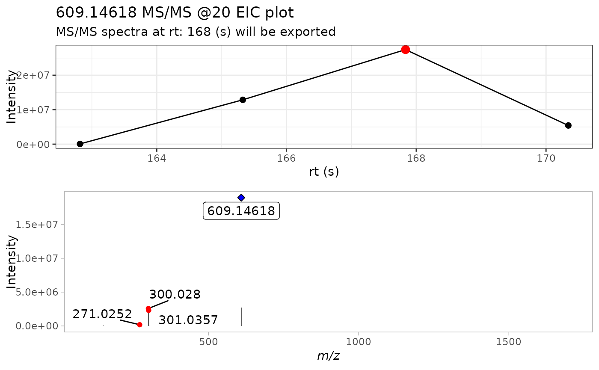

2 - Using the MS2extract batch pipeline
Cristian Quiroz-Moreno & Jessica Cooperstone
2024-10-18
Source:vignettes/Busing_batch_extract.Rmd
Busing_batch_extract.RmdIntroduction
In the previous tutorial Introduction to MS2extract package, we described in a detailed manner the core functions of the package. If you are starting to use the MS2extract package with this tutorial, we encourage you to take a look at this tutorial first.
Once you are familiar with the core workflow and functions of this
package, we can dive into an automated pipeline with the proposed
batch_*() functions. If you find that you want to extract
many MS/MS spectra at once, you will want to use
thesebatch_*() functions
The first three main steps have a separate batch_*()
alternative functions; importing mzXML files, extracting MS/MS spectra,
and detecting masses. However, exporting your library to a
.msp or .mgf file is able to detect if the
provided spectra comes from a single or multiple
.mzXML/.mzML files, so the same function works
in both cases.

Figure 1. Overview of general data processing pipeline to extract MS/MS spectra using the MS2extract package
Batch functions
We are familiar with the arguments that the core functions accept, in
this section we describe extra arguments that specific
batch_*() functions require.
batch_import_mzxml
Similarly to import_mzxml(), we need to provide the
compound metadata, with at minimum the compound name, formula,
ionization mode, and collision energy. Optionally, but recommended, the
region of interest where each compound elute (min_rt and
max_rt).
# Select the csv file name and path
batch_file <- system.file("extdata", "batch_read.csv",
package = "MS2extract"
)
# Read the data frame
batch_data <- read.csv(batch_file)
# File paths for Procyanidin A2 and Rutin
ProcA2_file <- system.file("extdata",
"ProcyanidinA2_neg_20eV.mzXML",
package = "MS2extract"
)
Rutin_file <- system.file("extdata",
"Rutin_neg_20eV.mzXML",
package = "MS2extract"
)
# Add file path - User should specified the file path -
batch_data$File <- c(ProcA2_file, Rutin_file)
# Checking batch_data data frame
dplyr::glimpse(batch_data)
#> Rows: 2
#> Columns: 7
#> $ Name <chr> "Procyanidin A2", "Rutin"
#> $ Formula <chr> "C30H24O12", "C27H30O16"
#> $ Ionization_mode <chr> "Negative", "Negative"
#> $ min_rt <int> 163, 162
#> $ max_rt <int> 180, 171
#> $ COLLISIONENERGY <chr> " 20 eV", " 20 eV"
#> $ File <chr> "/home/runner/work/_temp/Library/MS2extract/extdata/Pr…The only difference between batch_import_mzxml() and
import_mzxml() is that met_metadata can be
more than one row. In this example, we are working with two compounds,
procyanidin A2 and rutin.
Tip: you can extract multiple compounds from the same .mzXML if they have different precursor ion m/z.
Tip: you can also specify multiple compounds that have the same m/z as long as they have different retention time.
batch_compounds <- batch_import_mzxml(batch_data)
#>
#> ── Begining batch import ───────────────────────────────────────────────────────
#>
#> ── -- ──
#>
#> • Processing: ProcyanidinA2_neg_20eV.mzXML
#> • Found 1 CE value: 20
#> • Remember to match CE velues in spec_metadata when exporting your library
#> • m/z range given 10 ppm: 575.11376 and 575.12526
#> • Compound name: Procyanidin A2_Negative_20
#>
#> ── -- ──
#>
#> • Processing: Rutin_neg_20eV.mzXML
#> • Found 1 CE value: 20
#> • Remember to match CE velues in spec_metadata when exporting your library
#> • m/z range given 10 ppm: 609.14002 and 609.15221
#> • Compound name: Rutin_Negative_20
#>
#> ── End batch import ────────────────────────────────────────────────────────────The raw mzXML data contains:
- Procyanidin A2: 24249 ions
- Rutin: 22096 ions
# Checking dimension by compound
purrr::map(batch_compounds, dim)
#> $`Procyanidin A2_Negative_20`
#> [1] 24249 6
#>
#> $Rutin_Negative_20
#> [1] 22096 6batch_extract_MS2()
Now that we have our data in imported, we can proceed to extract the
most intense MS/MS scan for each compound. In this case, the
batch_extract_MS2() functions do not have extra arguments,
although most of the arguments remains fairly similar.
# Use extract batch extract_MS2
batch_extracted <- batch_extract_MS2(batch_compounds,
verbose = TRUE,
out_list = FALSE
)
By using verbose = TRUE, we can display the MS/MS TIC
plot as well the raw MS/MS spectra of the most intense scan for each
compound.
batch_detect_mass()
Now that we have the raw MS/MS spectra, we are going to remove
background noise based on intensity. batch_detect_mass()
has the same arguments than its core analogue.
batch_mass_detected <- batch_detect_mass(batch_extracted, # Compound list
normalize = TRUE, # Normalize
min_int = 1 # 1% minimum intensity
)
purrr::map(batch_mass_detected, dim)
#> $`Procyanidin A2_Negative_20`
#> [1] 38 6
#>
#> $Rutin_Negative_20
#> [1] 4 6We see a decrease of number of ions, 38 and 4 ions for procyanidin A2 and rutin, respectively.
write_msp
In contrast with the previous batch functions,
write_msp() is able to detect if the user is providing a
single or multiple spectra. However, the user needs to provide metadata
about each compound to be included in the resulting .msp database.
# Reading batch metadata
metadata_msp_file <- system.file("extdata",
"batch_msp_metadata.csv",
package = "MS2extract"
)
metadata_msp <- read.csv(metadata_msp_file)
dplyr::glimpse(metadata_msp)
#> Rows: 2
#> Columns: 8
#> $ NAME <chr> "Procyanidin A2", "Rutin"
#> $ PRECURSORTYPE <chr> "[M-H]-", "[M-H]-"
#> $ FORMULA <chr> "C30H24O12", "C27H30O16"
#> $ INCHIKEY <chr> "NSEWTSAADLNHNH-LSBOWGMISA-N", "IKGXIBQEEMLURG-NVPNHPE…
#> $ SMILES <chr> "C1C(C(OC2=C1C(=CC3=C2C4C(C(O3)(OC5=CC(=CC(=C45)O)O)C6…
#> $ IONMODE <chr> "Negative", "Negative"
#> $ INSTRUMENTTYPE <chr> "LC-ESI-QTOF", "LC-ESI-QTOF"
#> $ COLLISIONENERGY <chr> "20 eV", "20 eV"After having the cleaned MS/MS spectra and the compound metadata, we can proceed to export them into a .msp file.
write_msp(
spec = batch_mass_detected,
spec_metadata = metadata_msp,
msp_name = "ProcA2_Rutin_batch.msp"
)Session info
sessionInfo()
#> R version 4.4.1 (2024-06-14)
#> Platform: x86_64-pc-linux-gnu
#> Running under: Ubuntu 22.04.5 LTS
#>
#> Matrix products: default
#> BLAS: /usr/lib/x86_64-linux-gnu/openblas-pthread/libblas.so.3
#> LAPACK: /usr/lib/x86_64-linux-gnu/openblas-pthread/libopenblasp-r0.3.20.so; LAPACK version 3.10.0
#>
#> locale:
#> [1] LC_CTYPE=C.UTF-8 LC_NUMERIC=C LC_TIME=C.UTF-8
#> [4] LC_COLLATE=C.UTF-8 LC_MONETARY=C.UTF-8 LC_MESSAGES=C.UTF-8
#> [7] LC_PAPER=C.UTF-8 LC_NAME=C LC_ADDRESS=C
#> [10] LC_TELEPHONE=C LC_MEASUREMENT=C.UTF-8 LC_IDENTIFICATION=C
#>
#> time zone: UTC
#> tzcode source: system (glibc)
#>
#> attached base packages:
#> [1] stats graphics grDevices utils datasets methods base
#>
#> other attached packages:
#> [1] MS2extract_0.99.0
#>
#> loaded via a namespace (and not attached):
#> [1] Rdpack_2.6.1 readxl_1.4.3
#> [3] rlang_1.1.4 magrittr_2.0.3
#> [5] clue_0.3-65 matrixStats_1.4.1
#> [7] compiler_4.4.1 systemfonts_1.1.0
#> [9] vctrs_0.6.5 reshape2_1.4.4
#> [11] stringr_1.5.1 ProtGenerics_1.36.0
#> [13] pkgconfig_2.0.3 crayon_1.5.3
#> [15] fastmap_1.2.0 backports_1.5.0
#> [17] XVector_0.44.0 labeling_0.4.3
#> [19] utf8_1.2.4 rmarkdown_2.28
#> [21] tzdb_0.4.0 UCSC.utils_1.0.0
#> [23] preprocessCore_1.66.0 ragg_1.3.3
#> [25] purrr_1.0.2 xfun_0.48
#> [27] MultiAssayExperiment_1.30.3 zlibbioc_1.50.0
#> [29] cachem_1.1.0 GenomeInfoDb_1.40.1
#> [31] jsonlite_1.8.9 highr_0.11
#> [33] DelayedArray_0.30.1 BiocParallel_1.38.0
#> [35] broom_1.0.7 parallel_4.4.1
#> [37] cluster_2.1.6 R6_2.5.1
#> [39] bslib_0.8.0 stringi_1.8.4
#> [41] limma_3.60.6 car_3.1-3
#> [43] cellranger_1.1.0 GenomicRanges_1.56.2
#> [45] jquerylib_0.1.4 iterators_1.0.14
#> [47] Rcpp_1.0.13 SummarizedExperiment_1.34.0
#> [49] knitr_1.48 readr_2.1.5
#> [51] IRanges_2.38.1 Matrix_1.7-0
#> [53] igraph_2.0.3 tidyselect_1.2.1
#> [55] abind_1.4-8 yaml_2.3.10
#> [57] doParallel_1.0.17 codetools_0.2-20
#> [59] affy_1.82.0 lattice_0.22-6
#> [61] tibble_3.2.1 plyr_1.8.9
#> [63] withr_3.0.1 Biobase_2.64.0
#> [65] evaluate_1.0.1 OrgMassSpecR_0.5-3
#> [67] desc_1.4.3 ggpubr_0.6.0
#> [69] pillar_1.9.0 affyio_1.74.0
#> [71] BiocManager_1.30.25 carData_3.0-5
#> [73] MatrixGenerics_1.16.0 foreach_1.5.2
#> [75] stats4_4.4.1 MSnbase_2.30.1
#> [77] MALDIquant_1.22.3 ncdf4_1.23
#> [79] generics_0.1.3 hms_1.1.3
#> [81] S4Vectors_0.42.1 ggplot2_3.5.1
#> [83] munsell_0.5.1 scales_1.3.0
#> [85] glue_1.8.0 lazyeval_0.2.2
#> [87] tools_4.4.1 mzID_1.42.0
#> [89] QFeatures_1.14.2 vsn_3.72.0
#> [91] mzR_2.38.0 ggsignif_0.6.4
#> [93] fs_1.6.4 XML_3.99-0.17
#> [95] cowplot_1.1.3 grid_4.4.1
#> [97] impute_1.78.0 tidyr_1.3.1
#> [99] rbibutils_2.3 MsCoreUtils_1.16.1
#> [101] colorspace_2.1-1 GenomeInfoDbData_1.2.12
#> [103] PSMatch_1.8.0 Formula_1.2-5
#> [105] cli_3.6.3 textshaping_0.4.0
#> [107] fansi_1.0.6 S4Arrays_1.4.1
#> [109] dplyr_1.1.4 AnnotationFilter_1.28.0
#> [111] pcaMethods_1.96.0 gtable_0.3.5
#> [113] rstatix_0.7.2 sass_0.4.9
#> [115] digest_0.6.37 BiocGenerics_0.50.0
#> [117] ggrepel_0.9.6 SparseArray_1.4.8
#> [119] farver_2.1.2 htmlwidgets_1.6.4
#> [121] htmltools_0.5.8.1 pkgdown_2.1.1
#> [123] lifecycle_1.0.4 httr_1.4.7
#> [125] Rdisop_1.64.0 statmod_1.5.0
#> [127] MASS_7.3-60.2